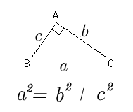

Pythagoras Theorem(2)
Pythagoras Theorem

Applet
How to use this applet
Drag the red point.
Press "Define" button.
Drag five pieces of quadrilaterals to fit in the square below.
Reference "Pythagoras Theorem" OYA,Shinichi, 1975, Tokai univ. Press